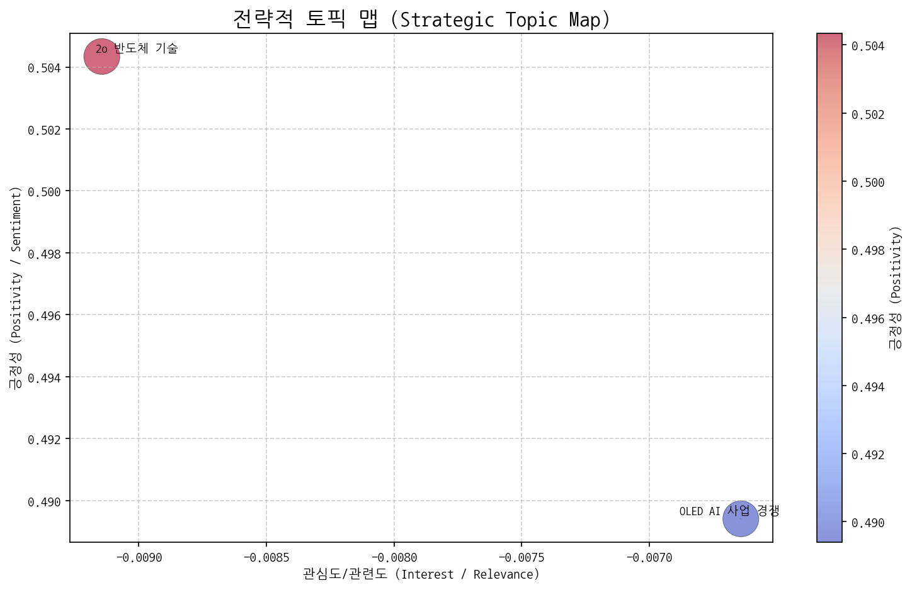
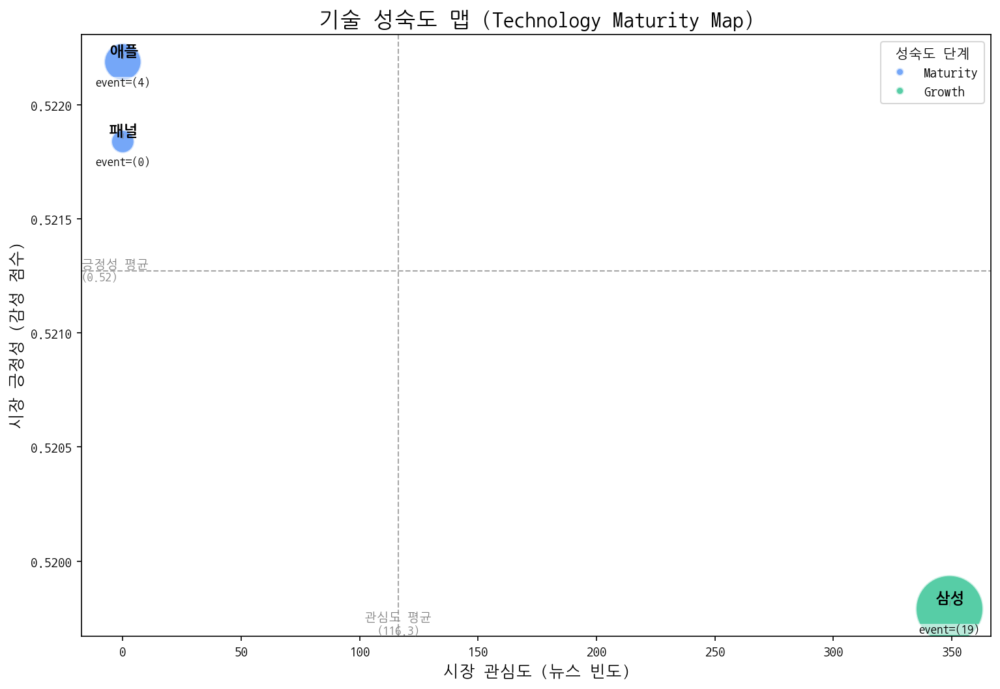
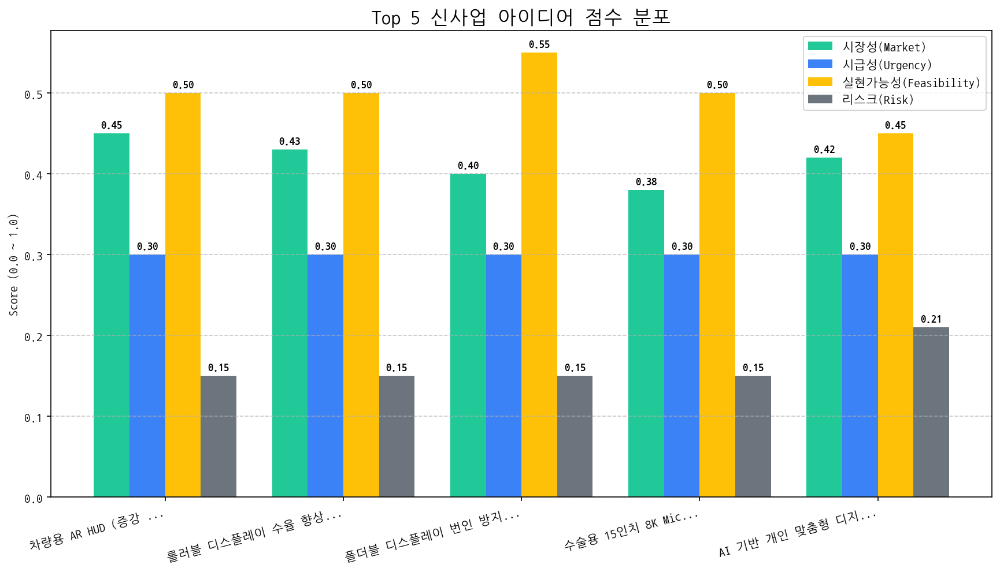

| 토픽명 | 요약 | 핵심 키워드 | |:--------------|:--------------------------------------------------------------------------------------------|:-------------| | 2o 반도체 기술 | 20대에게 인기 있는 브랜드의 반도체 기술이 전기차, AI 등 핵심 산업 분야에서 높은 판매고를 올리고 있음을 나타냅니다. | 2o, 브랜드, 반도체 | | OLED AI 사업 경쟁 | LG전자와 애플을 중심으로 OLED 디스플레이 시장에서 AI 기술을 활용한 사업 경쟁이 미국과 중국을 포함한 글로벌 시장에서 3분기에 더욱 심화될 것으로 예상된다. | oled, ai, 사업 |
| 기술 | 단계 | 판단 근거 | |:-----|:---------|:----------------------------------------------------------------------------------| | 패널 | Maturity | 뉴스 언급 빈도가 0회이고 투자, 출시, 수주 이벤트가 없어 기술 혁신이나 시장 확대가 정체된 성숙기 단계로 판단됩니다. | | 애플 | Maturity | 최근 뉴스 언급 빈도가 없고 투자나 수주 이벤트 없이 출시만 발생하며, 시장 감성 점수가 중간 수준인 것은 성숙기에 접어들었다는 것을 시사합니다. | | 삼성 | Growth | 뉴스 언급 빈도가 높고, 긍정적 시장 감성이 중간 수준이며, 출시 이벤트가 투자를 상회하여 시장 성장 단계에 진입한 것으로 판단됩니다. |
| 아이디어 | 가치 제안 | 총점 | |:-----------------------------------|:--------------------------------------------------------------------------------------------------|-----:| | 차량용 AR HUD (증강 현실 헤드업 디스플레이) 패널 | 운전자의 시야를 방해하지 않으면서 내비게이션, ADAS 정보를 AR 형태로 제공하여 안전 운전 지원, 넓은 시야각 및 고해상도 구현, 경쟁사 대비 20% 향상된 시인성 제공. | 3.5 | | 롤러블 디스플레이 수율 향상을 위한 AI 공정 모니터링 서비스 | AI 기반 실시간 공정 데이터 분석을 통해 불량 발생 예측 및 원인 분석, 롤러블 디스플레이 수율 20% 향상 및 생산 비용 절감, 경쟁사 대비 뛰어난 가격 경쟁력 확보. | 3.4 | | 폴더블 디스플레이 번인 방지 기술 및 부품 개발 | 새로운 소재와 구조 설계를 통해 폴더블 디스플레이의 번인 현상을 50% 이상 감소시키고 수명을 2배 이상 연장, 경쟁사 대비 뛰어난 내구성 확보. | 3.4 | | 수술용 15인치 8K MicroLED 디스플레이 | 기존 대비 4배 높은 해상도로 수술 시야를 개선하고, 3D 영상 지원을 통해 입체적인 정보 제공, 수술 시간 단축 및 성공률 향상, 의료진의 피로도 감소. | 3.3 | | AI 기반 개인 맞춤형 디지털 사이니지 서비스 | AI 기반 실시간 고객 분석을 통해 개인별 최적화된 광고 콘텐츠 제공, 광고 효과 극대화 및 고객 경험 향상, 기존 대비 광고 수익 30% 증가. | 3.1 || Hypothesis | Target | KPI | Owner | Due |
|---|---|---|---|---|
| 글로벌 완성차 OEM(프리미엄 브랜드)들은 기존 HUD 대비 20% 향상된 시인성을 제공하는 AR HUD에 추가 비용을 지불할 의향이 있다. | BMW, Mercedes-Benz, Audi의 HUD 관련 부서 담당자 인터뷰 (각 사별 2명 이상) | 인터뷰 대상 중 4명 이상이 경쟁사 대비 20% 향상된 시인성에 대한 추가 비용 지불 의사 또는 LOI (Letter of Intent)를 밝힘. | 사업개발팀 | 2025-11-02 |
| 고휘도 MicroLED 패널 기반 AR HUD가 극한 환경(온도, 진동)에서도 차량 안전 기준을 충족하는 내구성을 확보할 수 있다. | 자체 개발 MicroLED 패널 시제품 대상 차량 환경 테스트 (온도, 진동, 습도) | 차량 환경 테스트 완료 후, MicroLED 패널의 기능 저하율이 5% 미만이며, 안전 기준 테스트 통과. | 기술기획팀 | 2025-11-02 |
| 실시간 3D 렌더링 기술과 운전자 시선 추적 기술을 통합하여 AR 정보 표시 정확도 및 안정성을 95% 이상 확보할 수 있다. | 자체 개발 AR HUD 시제품 대상 사용자 환경 테스트 (다양한 운전 조건) | 사용자 환경 테스트에서 AR 정보 표시 오류율이 5% 미만이며, 10명 이상의 잠재 고객 대상 평가에서 80% 이상이 '정보 정확도 및 안정성이 높다'고 응답. | 연구개발팀 | 2025-11-02 |